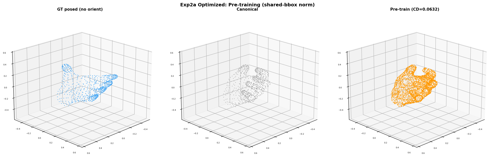
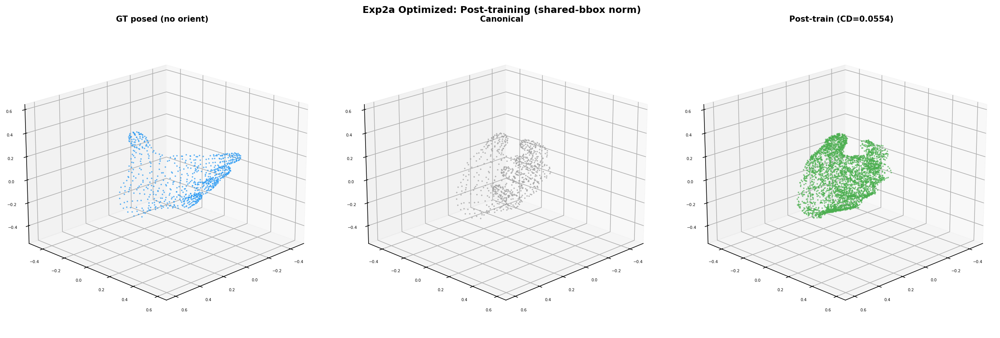
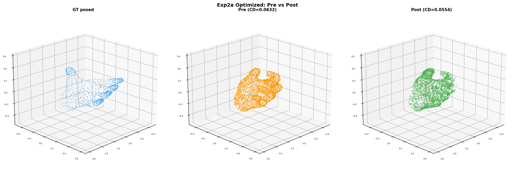

Goal: Full pipeline deformation learning with 3 speed optimizations and correct shared-bbox normalization.
| # | Optimization | Effect |
|---|---|---|
| 1 | Precompute canonical SLat once (skip encoder every step) | Encoder runs once, not 100 times |
| 2 | Cache frame_blocks output (frozen, deterministic) | Only global_blocks runs each step |
| 3 | Correct shared-bbox normalization | Both meshes in same coordinate frame |
| Metric | Value |
|---|---|
| Deformation gap (canonical ↔ posed, shared norm) | 0.0872 |
| Pre-train CD | 0.0632 |
| Best CD (step 40) | 0.0505 (−20.1%) |
| Post-train CD (step 100) | 0.0555 (−12.2%) |
| Training time | 159s (1.6s/step) |

GT posed no orient (blue), canonical input (gray), pre-train prediction (orange). Prediction matches canonical. CD=0.063.

Post-train prediction (green) moves toward GT posed (blue). CD=0.055.

GT posed (blue), pre-train (orange), post-train (green). Post-train is visibly closer to GT.
With shared-bbox normalization and optimized pipeline, the model closes 14% of the canonical→posed gap in 100 steps. The global_blocks extract pose from the image and modify SLat to produce finger articulation.